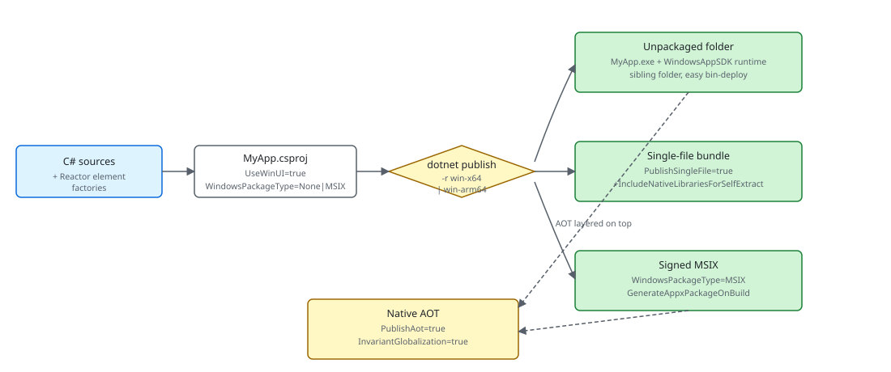

Packaging¶
A Microsoft.UI.Reactor (Reactor) app is a normal WinUI 3 / Windows App SDK executable —
dotnet publish produces the deployable artifact and the framework
itself adds nothing exotic to the project file. What you choose at
publish time is the shape of that artifact: an unpackaged folder
(the dotnet new reactorapp default), a signed
MSIX, a single-file bundle, or a Native AOT native binary — each
combined with a win-x64 or win-arm64 runtime identifier. The
trade-offs are the same ones any WinUI 3 app faces; the
Reactor-specific notes on this page cover what changes when your
codebase leans on the reflection-driven pieces of the framework
(AutoColumns<T>, devtools component discovery
when Reactor.DevtoolsSupport is enabled, and the UseObservableTree
INPC walker).
| Publish shape | Key properties | Runtime identifier | What you get |
|---|---|---|---|
| Unpackaged (template default) | WindowsPackageType=None, WindowsAppSDKSelfContained=true |
win-x64 / win-arm64 |
A folder with MyApp.exe and the WinUI 3 runtime alongside it. Run from anywhere; ship as a zip. |
| MSIX | WindowsPackageType=MSIX, GenerateAppxPackageOnBuild=true, signed via PackageCertificateThumbprint or PackageCertificateKeyFile |
win-x64 / win-arm64 |
A signed .msix. Required for Microsoft Store; the cleanest sideload story for enterprise. |
| Single-file | PublishSingleFile=true, IncludeNativeLibrariesForSelfExtract=true |
win-x64 / win-arm64 (must be set) |
One .exe that self-extracts the WinUI runtime to %TEMP%/.net/ on first launch. |
| Native AOT | PublishAot=true, InvariantGlobalization=true (recommended) |
win-x64 / win-arm64 (required) |
A native binary with no JIT, no Assembly.GetTypes(), no Reflection.Emit. Fastest cold start; trim-only. |
The four shapes are not mutually exclusive — MSIX wraps any of the three publish outputs, and AOT layers on top of either an unpackaged folder or an MSIX. The decision is usually distribution-channel-first (Store / sideload / direct download) and then performance-second.

The unpackaged shape¶
dotnet new reactorapp scaffolds an unpackaged WinUI 3 project — the
shape every sample in this repo also uses:
```xml snippet="source:samples/TodoApp/TodoApp.csproj#unpackaged-shape"
The load-bearing properties are `UseWinUI=true` (pulls the WinUI 3
XAML runtime), `WindowsPackageType=None` (no MSIX wrapper —
`MyApp.exe` runs straight from the publish folder), and the explicit
`<Platforms>x64;ARM64</Platforms>` (Windows App SDK self-contained
builds reject the AnyCPU default — the template orders x64 first so
unqualified `dotnet build` picks the right default on x64 dev
machines, with ARM64 second for Snapdragon X). The
[`Microsoft.WindowsAppSDK.WinUI`](https://www.nuget.org/packages/Microsoft.WindowsAppSDK.WinUI)
sub-package brings the WinUI 3 SDK — reference assemblies plus the MSBuild
build/props/targets — while the native WinUI runtime is supplied by the
machine-wide Windows App Runtime install (or bundled into the publish output
when `WindowsAppSDKSelfContained=true`). The scaffolded template instead
pins the full
[`Microsoft.WindowsAppSDK`](https://www.nuget.org/packages/Microsoft.WindowsAppSDK)
metapackage (see below); inside this repo the correct reference is injected
centrally from `Directory.Build.targets` and versioned by
`WindowsAppSDKWinUIVersion` / `WindowsAppSDKVersion` in `Directory.Build.props`.
`WindowsAppSDKSelfContained=true` is the other load-bearing piece —
it bundles the WinUI runtime alongside the published exe so the app
runs without a separate Windows App Runtime install, **and** it lets
`dotnet watch run` survive hot-reload rebuilds (the Reactor Visual
Studio embedded-preview extension and any other `dotnet watch`-based
inner-loop tooling depends on this — incremental rebuilds otherwise
double-count transitive `Microsoft.WindowsAppSDK.*` references and
trip `Microsoft.WindowsAppSDK.ComponentReference.targets`' strict
version check). Flip it to `false` only if you've explicitly chosen
a framework-dependent distribution shape and your install
instructions tell users to install the WinAppRuntime first.
To ship this shape, `dotnet publish -c Release -r win-x64`. The
publish folder contains `MyApp.exe`, `Reactor.dll`, the WinUI runtime
(`Microsoft.WindowsAppRuntime.Bootstrap.dll`, the XAML compiler
output `MyApp.xbf`, etc.), and the .NET runtime if
`WindowsAppSDKSelfContained=true`. Zip it and you have a sideloadable
build that runs on any matching-arch Windows 10 1809+ machine.
## MSIX
For Microsoft Store distribution and most enterprise sideloading,
wrap the same publish output in an MSIX. The single-project MSIX
shape adds three properties on top of the unpackaged CSPROJ:
```xml
<PropertyGroup>
<WindowsPackageType>MSIX</WindowsPackageType>
<GenerateAppxPackageOnBuild>true</GenerateAppxPackageOnBuild>
<AppxPackageSigningEnabled>true</AppxPackageSigningEnabled>
<PackageCertificateThumbprint>...</PackageCertificateThumbprint>
</PropertyGroup>
<ItemGroup>
<AppxManifest Include="Package.appxmanifest" />
</ItemGroup>
Package.appxmanifest declares the package identity (Publisher,
PackageFamilyName, capabilities, file-type associations). The
WinUI 3 packaging docs
cover the manifest surface in full. The signing certificate is
either a Microsoft Store-issued cert (for Store submissions) or a
self-signed cert imported into Cert:\CurrentUser\My (for
sideloading). MSIX is the only shape that gives the app a package
identity — features like background tasks, share targets, and the
notifier APIs require it.
Single-file publish¶
Single-file collapses the publish folder into one .exe that
self-extracts on launch. For a WinUI 3 app the native runtime bits
are not in managed assemblies, so the bare PublishSingleFile=true
leaves several DLLs alongside the binary — add
IncludeNativeLibrariesForSelfExtract to fold those into the bundle:
<PropertyGroup>
<PublishSingleFile>true</PublishSingleFile>
<SelfContained>true</SelfContained>
<IncludeNativeLibrariesForSelfExtract>true</IncludeNativeLibrariesForSelfExtract>
<RuntimeIdentifier>win-x64</RuntimeIdentifier>
</PropertyGroup>
The trade-off is first-launch latency — the runtime extracts the
embedded assemblies to %TEMP%\.net\ (or the directory in
DOTNET_BUNDLE_EXTRACT_BASE_DIR) before the process starts. Two
Reactor-specific notes: Assembly.Location returns an empty string
inside a single-file bundle, so any code path that builds paths next
to the exe should use
AppContext.BaseDirectory
instead; and the
UsePersisted Application scope writes to
%LOCALAPPDATA%\<AssemblyName>\ — single-file doesn't change that
location, but trimming away the assembly name (via
<AssemblyName> rename in a publish profile) does.
ARM64¶
ARM64 is a second runtime identifier on the same project — the
<Platforms>x64;ARM64</Platforms> line in the project template
exists so MSBuild accepts the per-platform restore. Build for both
in CI by running publish twice:
There is no separate Reactor build for ARM64 — Reactor.dll is
AnyCPU-equivalent managed code that compiles for both architectures
from the same source. The native bits below it (the WinUI 3 runtime
and any System.Drawing.Common / TraceEvent natives transitively
pulled in by Reactor) ship per-RID, which is why the runtime
identifier matters even for managed-only Reactor code. The repo's
sample apps default to <Platforms>x64;ARM64</Platforms>; the
reactorapp template uses <Platforms>x64;ARM64;X86</Platforms>
(X86 retained for parity with the WinUI 3 templates), but Reactor
itself is only tested on x64 / ARM64.
Native AOT¶
Reactor's perf-bench projects publish under AOT and run cleanly —
the framework is built to be AOT-compatible on its hot path. The
shape is the same as any other AOT publish, with PublishAot=true
and a runtime identifier:
```xml snippet="source:tests/stress_perf/StressPerf.Reactor/StressPerf.Reactor.csproj#aot-stress-shape"
`dotnet publish -c Release -r win-x64` produces a native binary —
no `coreclr.dll`, no JIT, ~50 ms cold start versus ~250 ms for the
JIT-based build on the same hardware. The project template gates
the same shape behind a `NativeAot` parameter:
```xml snippet="source:tools/Templates/templates/WinUIApp-CSharp/Company.ReactorApp1.csproj#template-shape"
Pass dotnet new reactorapp --NativeAot true to get the AOT-enabled
variant. InvariantGlobalization=true is paired with PublishAot
because the alternative — shipping the full ICU data — pulls in
trim warnings that the AOT analyzer flags as actionable.
Caveat:
AutoColumns<T>andAssembly.GetTypes()are the two reflection surfaces to know about.Factories.AutoColumns<T>()walkstypeof(T).GetProperties()to buildFieldDescriptors for aDataGrid<T>, so the generic argument carries[DynamicallyAccessedMembers(PublicProperties | PublicConstructors)]— call it from your component and the AOT analyzer threads the annotation back through your code. Hand-builtColumn<T>(...)columns avoid the reflection entirely and are the safe choice for trim-paranoid code. The devtools code path walksAssembly.GetTypes()to enumerate component types when the app opts intoReactor.DevtoolsSupport, which is incompatible with trimming and carries[RequiresUnreferencedCode]on every method that touches it. Leave the switch off for retail/AOT builds (the documented retail shape; see Dev Tooling).
Tips¶
Pick distribution before performance. MSIX is Store-only-ish and gives you a real package identity; unpackaged + zip is the easiest direct-download story; single-file is the same shape as unpackaged with a slower first launch. AOT is independent of all three — apply it once the distribution shape is settled.
Publish for both architectures in CI from day one. ARM64
Windows on Snapdragon X is a real audience now; an x64-only build
runs under emulation but pays a startup tax. The <Platforms> line
in the template leads with x64 (the majority dev-machine default)
and includes ARM64 — the missing piece is the second
dotnet publish -r win-arm64 invocation in the build pipeline.
Keep Reactor.DevtoolsSupport out of retail. The
Reactor.DevtoolsSupport runtime host configuration
option is a capability gate that nothing user-visible depends on at
runtime — but the code path it enables walks Assembly.GetTypes().
Leaving it off for Release/AOT builds drops the devtools trim warning
and lets the linker remove that path. Devtools implementation types ship
in the optional, same-version Microsoft.UI.Reactor.Devtools package;
only add that package to app projects that intentionally expose
--devtools.
Only reference Microsoft.UI.Reactor.Advanced when you actually use
it. The optional, same-version
Microsoft.UI.Reactor.Advanced package hosts the
heavier optional subsystems (spec 062 §7): the Win2D canvas family
(Win2DCanvas, Win2DAnimatedCanvas, Win2DVirtualCanvas), the
data grid (DataGrid / Column / AutoColumns), the Markdown
renderer (Markdown(...)), the charting subsystem (Charts + the D3
primitives), and the docking subsystem (DockManager). Any consumer of
those must add its <PackageReference>. Adding it also pulls
Microsoft.Graphics.Win2D (~1 MB managed + ~3 MB native interop dll) into
your publish output and roots its WinRT activation chain for the AOT
trimmer, so apps that use none of the Advanced subsystems should leave
Microsoft.UI.Reactor.Advanced off their <PackageReference> list — that
keeps both the moved subsystems and the Win2D native payload out of your
build. That split is the whole reason Advanced is a sibling package and not
a folder inside Reactor.dll.
Reactor.dll is in your publish output as a managed assembly,
not a tucked-away framework package. Reactor ships as the public preview
NuGet package Microsoft.UI.Reactor version 0.1.0-preview.13; local
source-built smoke packages still use 0.0.0-local via mur pack-local.
Trim-friendly deployments don't get any framework-side magic; the same trimmer
configuration that works for any WinUI 3 app works here.
Microsoft.WindowsAppSDK is explicitly pinned in the template, not
transitively inherited. The dotnet new reactorapp CSPROJ
references both Microsoft.UI.Reactor and Microsoft.WindowsAppSDK
side-by-side so the SDK version is an obvious knob — bump it in the
scaffolded CSPROJ when you need a specific WinUI patch. The
repo-internal WindowsAppSDKVersion MSBuild property only governs
projects under this clone (Directory.Build.props); consumer
projects pick their version directly.
Debug builds of the scaffolded template auto-include the
Microsoft.UI.Reactor.Devtools package (gated by a
Condition="'$(Configuration)' == 'Debug'" ItemGroup that adds both
the package and RuntimeHostConfigurationOption
Reactor.DevtoolsSupport=true). F5 from Visual Studio or VS Code
runs the app with --devtools (from the scaffolded
Properties/launchSettings.json), lighting up the right-click
devtools menu and the docked devtools window. The Reactor Visual
Studio embedded-preview extension (spec 056) also relies on this
Debug wiring — its dotnet watch run -- --devtools run --embed
--embed-host-pid <pid> activation needs the devtools assembly
loadable in the user's process. That VSIX is the roughest and most
experimental consumer of this wiring today; keep the Debug-only
boundary in place unless you are deliberately testing the embedded
preview. Release builds drop both the package
and the host-config switch so the trim / AOT analyzers stay quiet;
move the ItemGroup out of the Debug condition if you want devtools
in Release too.
Next Steps¶
- Dev Tooling — Previous: the inner-loop side of the build pipeline (
mur pack-local,dotnet watch, hot reload). - Getting Started — Where the
dotnet new reactorapptemplate that produces the unpackaged shape comes from. - Performance — When you should reach for AOT (cold-start budgets, startup-perf benchmarks).
- Perf Instrumentation — The ETW / EventPipe pipeline that survives AOT publish unchanged.
- Dev Tooling — How the
Reactor.DevtoolsSupportcapability switch combines with--devtoolsactivation.